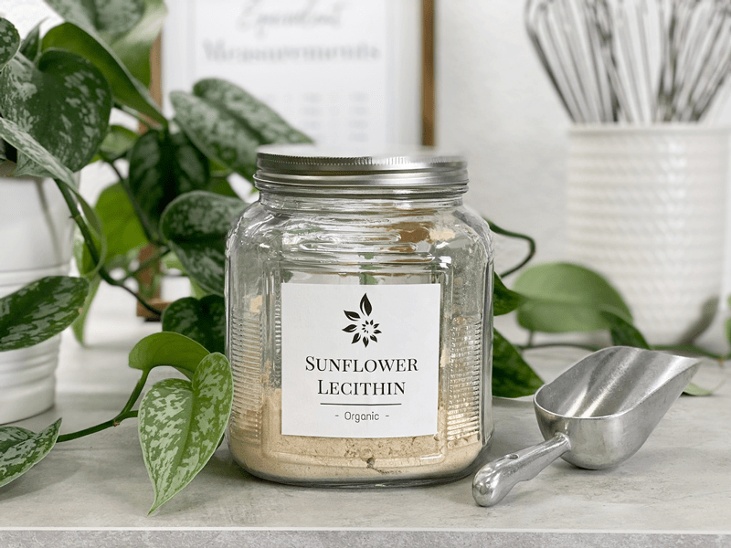

Lecithin (emulsifier)
When preparing raw food recipes, a time will come when you need to thicken a recipe. Lecithin replaces eggs in the “cooked world.” Learning to use raw thickeners will help to make all your creations successful creations!

Ways to Use Lecithin
- Lecithin takes the place of eggs in recipes that require the mixing of oil/fat and water-based components.
- An essential ingredient for making raw desserts such as Cream Pies and Puddings.
- Be sure to use an organic and NON-genetically modified lecithin.
- In addition to its culinary benefits, lecithin nutritionally supports fat burning, healthy cholesterol and triglyceride levels, cardiovascular health, liver function, nerve function, brain function, and memory.
- Lecithin will thicken anything; it is added to (allow 10 or more minutes for full-thickness).
- Lecithin adds a nice creamy flavor.
- Lecithin can be soy or sunflower based.
- The majority of lecithin is extracted from soybeans, meaning it is both vegetarian and vegan-friendly.
- Use it in recipes to replace some of the fat content, and it will also improve the moisture and texture of your recipes.
- As an emulsifier, it helps oil-and-water mixtures such as those in gravy, nut butters, and soups to blend and remain combined.
- It helps the body utilize specific vitamins such as Vitamin A, B, E, and K. Lecithin granules also help to break down fat and cholesterol into smaller pieces.
- For the suspending and emulsifying properties, it is added to various sauces, gravies, soups, nut butters, and gravies. Lecithin is an essential ingredient in chocolate, caramel, confectionary coatings for spattering control, to prevent crystallization, and as an emulsifier.
- Add the lecithin slowly towards the end of any recipe.
Lecithin works as an emulsifier and helps with mouth-feel. There are other food scientific reasons, but for the sake raw… these are the two that I am going to mention.
As an emulsifier, it helps prevent the separation of two ingredients that do not mix under normal circumstances. For example, fat and water will separate unless mixed with an emulsifier, which is one of the primary purposes of lecithin in foods. It helps salad dressings, nut-milks, sauces, and gravies (just, for example) hold together. With this emulsifying property, it helps to enhance the shelf life of foods. By how long, I am not sure. Food manufacturing companies are required to have their foods tested to determine the shelf life of food.
Using in Recipes:
To add a creamy texture in salad dressings and gravy…
- Add one teaspoon of granules or a half-teaspoon of liquid lecithin per one cup of salad dressing, gravy, or other mixture. Stir vigorously. You will find that as well as maintaining an emulsified mixture, the lecithin will also add a creamy texture to your recipes.
Use in smoothies…
- Add 1/2 teaspoon of liquid lecithin or one tablespoon of granules to one cup of fruit smoothies. Blend until smooth and creamy. Lecithin is a source of B vitamins, including choline and inositol, and greatly helps increase the absorption of fat-soluble vitamins such as vitamin A.
Use in nut milks…
- Add 1/2 teaspoon of liquid lecithin or one tablespoon of granules to one cup of non-dairy milk drinks. Blend until smooth and creamy.
For added nutrition…
- Add a tablespoon to any cake or pastry recipe for added nutrition.
To reduce oil in recipes…
- Replace only half of the oil and/or butter in your recipe when using lecithin in its liquid form, as liquid lecithin is more concentrated than fats or lecithin granules.
- Replace the oil and/or equal butter part for the part when using lecithin granules.
- Combine lecithin with oil and butter in your recipe if you want the taste of butter or oil, but without all of the fat. If using liquid lecithin, only add half the amount of lecithin as the amount of butter or oil you want to leave out of the recipe. If using lecithin granules, substitute the omitted butter or oil equal part for part.
Do you cook?
- Replace each egg in meatball recipes with 1 tablespoon of soy lecithin granules.
- Substitute 1 tablespoon of liquid soya lecithin for each large whole egg in yeast breads. Add one cup of granules per loaf of bread dough, and knead in. Lecithin’s emulsifying properties will interact with gluten, the protein in the flour, to strengthen the gluten network. The dough will rise evenly, and the holes created by gas escaping during the yeast process will be small and consistent, ensuring a good texture.
- Many people who strive for a healthy lifestyle cut most or all of the fat from their baking. Reduced-fat food tends to dry out in the oven; you can counteract this with lecithin. Lecithin replaces oils and butter as an emulsifier and keeps food moist. Adding lecithin to standard dough recipes also helps what you are baking retain moisture. Dry lecithin works for some recipes, while others call for a blend of the granules and pureed prunes.
Sunflower lecithin is an excellent alternative to soy-based lecithin, which is often GMO. I, for one, have to stay away from soy, so I am quite thankful for having a sunflower version of this product. You can order this online through Mountain Organics.
Raw sunflower seed lecithin contains a high level of choline, which breaks up cholesterol in the body, and it is vital for the proper functioning of the brain. Unlike soy lecithin, sunflower lecithin is 100% raw! The dark, syrupy lecithin is cold-pressed, meaning that no heat or solvents are used during extraction. Sunflower lecithin is useful in maintaining healthy cholesterol levels as part of a low cholesterol diet and is also a rich source of phosphatidylcholine for the prevention of gallstones. The high levels of choline are necessary for healthy liver and brain function. Sunflower lecithin is excellent when added to smoothies, soups, and sauces. It also is instrumental as a thickening agent.
Love Raw Foods™ products contain only the ingredients that nature intended, free of any preservatives or additives. From chocolate to fruits to our famous raw nut and seed butters, our vast array of organic superfoods are sure to satisfy any craving. Creating these recipes in small batches helps us to ensure that you are getting the freshest product possible. Just one taste and you will understand why we Love Raw Foods™!
- Sproutable Seeds & Beans
- Made from Premium, Whole, Raw Nuts & Seeds
- Raw, Vegan, Superfoods
- No Preservatives, Non-GMO
- Made to Order in Small Batches Made in a Peanut-free Facility
- Certified Kosher by Earth Kosher
- Certified Organic by Stellar Certification Services
© AmieSue.com